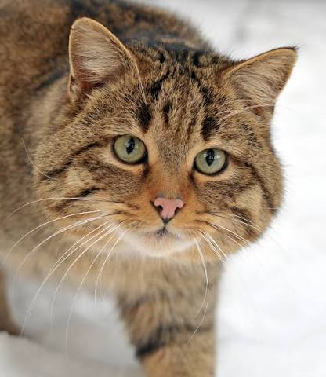
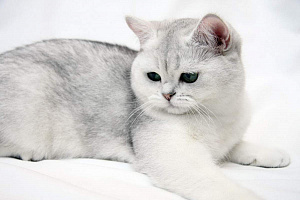
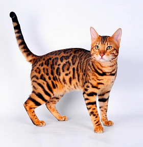
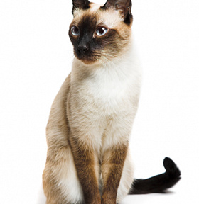
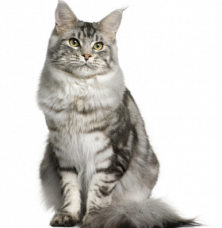

|

О котах
|
|
|
|

Британская короткошерстная
|

Бенгальская
|

Сиамская
|

Мейн-Кун
|
|
| Контакты и другое |
Глава 1 разведение(id="head1")
Разведение кошек — это ответственное занятие, требующее серьёзной подготовки, глубоких знаний и значительных временных и финансовых вложений. Прежде чем задуматься о получении потомства, заводчик должен чётко понимать цели своей работы: улучшение породы, сохранение редких линий или просто получение здоровых котят. Важно осознавать, что разведение — это не способ заработка, а скорее увлечение, которое часто требует больше затрат, чем приносит дохода. Будущий заводчик обязан изучить генетику, особенности породы, правила вязки и выращивания котят, а также быть готовым к круглосуточной заботе о животных.
Здоровье производителей — фундамент успешного разведения. Перед вязкой оба родителя должны пройти полное ветеринарное обследование, включая тесты на наследственные заболевания, инфекции и генетические аномалии. Кошки допускаются к разведению не раньше полутора-двух лет, когда организм полностью сформирован. Важно правильно подобрать пару: учитывать не только породные стандарты, но и совместимость характеров, родословные и отсутствие близкородственных связей. Беременность и роды требуют особого внимания — необходимо обеспечить будущей маме качественное питание, спокойную обстановку и своевременную помощь ветеринара.
Выращивание котят — это отдельный этап, требующий не меньше ответственности. С первых дней жизни малыши нуждаются в тепле, правильном питании и социализации. Заводчик должен следить за их развитием, вовремя проводить дегельминтизацию, вакцинацию и чипирование. Каждый котёнок должен получить документы о происхождении, а новые владельцы — подробные рекомендации по уходу. Кроме того, важно найти ответственных хозяев, которые обеспечат малышу достойные условия на всю жизнь. Таким образом, разведение кошек — это комплексный процесс, где здоровье, знания и любовь к животным стоят на первом месте.
К заголовку Закладки ....
Глава 2 этимология(id="head2")
Слово «кошка» имеет долгую и непростую историю, уходящую корнями в латинский язык. Принято считать, что оно было заимствовано славянами из народной латыни, где существовало слово cattus или catta, обозначавшее домашнюю кошку . Это латинское слово, в свою очередь, вероятно, пришло из Северной Африки, а в латынь попало не позднее IV–V веков . Именно от этого корня происходят английское cat, немецкое Katze, французское chat и многие другие названия кошки в европейских языках;
На древнерусской почве от слова «кот» сначала образовалась форма котъка, которая позже превратилась в «кошка» . Интересно, что «кошка» — это, по сути, уменьшительно-ласкательное слово, изначально обозначавшее самку кота . Лингвисты до сих пор спорят, откуда именно взялся звук «ш»: по одной версии, он возник под влиянием ласкательных форм на «-ька» (как «собачка» от «собака»), по другой — как результат фонетических изменений в древнерусском языке
Существует также альтернативная версия, согласно которой слово «кошка» могло быть связано с общеславянским названием «мачка» (от звукоподражания «мяу»), которое позже было вытеснено заимствованным «котъка» после принятия христианства . Однако наиболее признанной остаётся латинская теория происхождения. Таким образом, «кошка» — это слово с богатой историей, отражающее путь этого животного от Древнего Египта и Рима до славянских земель.
К заголовку Закладки ....